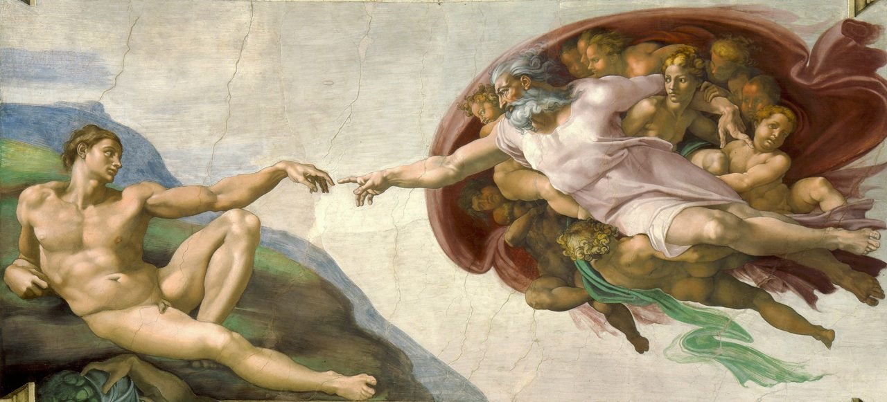

← 藝術101名畫背後的故事 EP02
西斯汀禮拜堂天頂畫
米開朗基羅・1508–1512

一個雕刻家，被教宗逼著畫了四年天花板。
教宗不放人
1508年，教宗儒略二世要米開朗基羅畫西斯汀禮拜堂的天頂。他自認是雕刻家，還推薦了對手拉斐爾。據說建築師布拉曼特在旁邊煽風，等著看他出糗。
仰頭四年
天頂長約35公尺、離地約20公尺。他寫詩給朋友，抱怨鬍子朝天、後腦勺快貼到背，詩的最後一句是「我不是畫家」。1512年10月31日，天頂揭幕。
沒碰到的手指
《創造亞當》裡，上帝的食指和亞當的手指之間留了一道縫。有學者認為上帝背後的紅色斗篷，畫的是人腦的形狀。
下次看到它，先看這裡
兩根沒碰到的手指 亞當的手軟垂，上帝的手指用力
上帝身後的紅斗篷 有學者認為輪廓像人腦切面
斜躺的亞當 身體還沒醒，只有手抬起來
作品資料
米開朗基羅（Michelangelo Buonarroti）
《西斯汀禮拜堂天頂畫》Sistine Chapel Ceiling，1508–1512
濕壁畫 天頂約長 35 公尺、寬 14 公尺，離地約 20 公尺
梵蒂岡 西斯汀禮拜堂（梵蒂岡博物館）
《西斯汀禮拜堂天頂畫》Sistine Chapel Ceiling，1508–1512
濕壁畫 天頂約長 35 公尺、寬 14 公尺，離地約 20 公尺
梵蒂岡 西斯汀禮拜堂（梵蒂岡博物館）